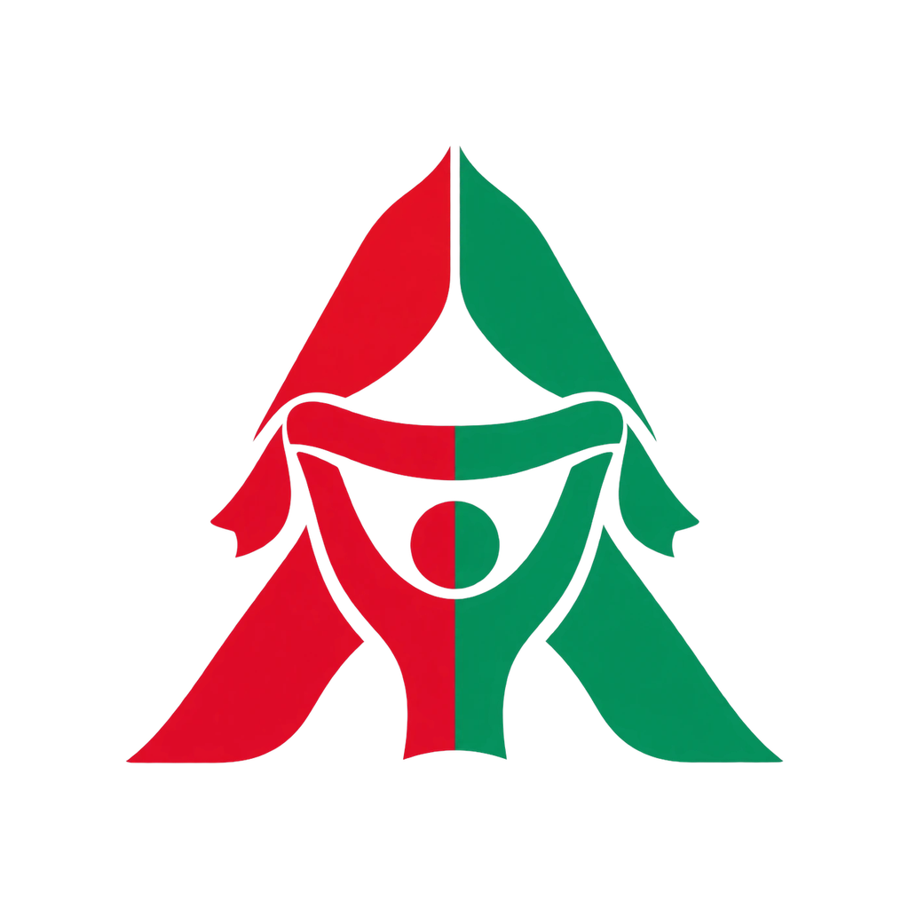

Amed Online
Destek
Soru, hata bildirimi ve önerilerin için: zanagamestudios@gmail.com — genellikle 2 iş günü içinde yanıt veririz.
Hesabımı nasıl silerim? Ayarlar → Hesap → Hesabı sil. Sunucudaki tahminlerin, puanların ve takma adın kalıcı olarak silinir.
Bildirim gelmiyor. Ayarlar → Bildirimler bölümünde istediğin türlerin açık olduğundan ve telefon ayarlarında Amed Online bildirimlerine izin verildiğinden emin ol.
Destek satın alımları tek seferliktir, abonelik değildir ve özellik açmaz. İade için Apple veya Google Play'in iade sürecini kullanabilirsin.
Amed Online bağımsız bir taraftar uygulamasıdır. Gizlilik politikası
Piştgirî
Ji bo pirs, raporên çewtiyan û pêşniyaran: zanagamestudios@gmail.com
Ez çawa hesabê xwe jê bibim? Mîheng → Hesab → Hesabê jê bibe.
Kirînên piştgiriyê yek carî ne, ne abonetî ne û taybetmendiyekê venakin.
Support
Questions, bug reports and ideas: zanagamestudios@gmail.com — we usually reply within 2 business days.
How do I delete my account? Settings → Account → Delete account. Your predictions, points and nickname are removed from our servers.
Support purchases are one-time tips, not subscriptions, and unlock no features. Refunds go through Apple or Google Play.
Amed Online is an independent fan app. Privacy policy